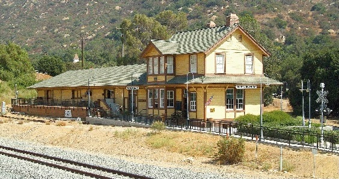
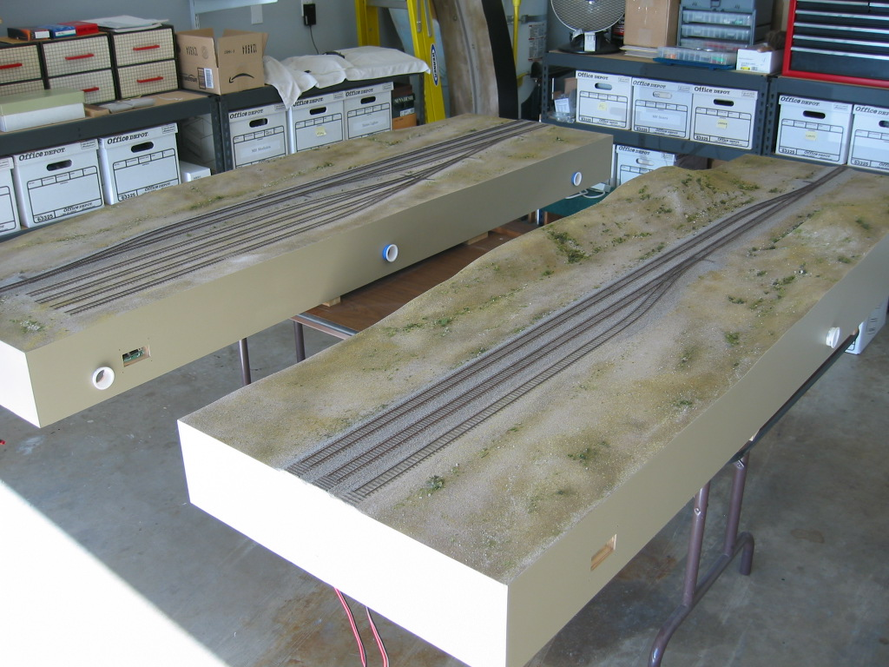
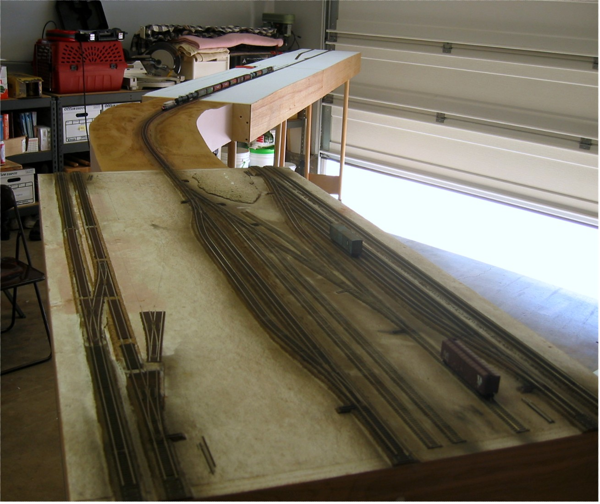

by Wesley Steiner
Creator and Founder of the Free-moN Standard
In the year 2000 I turned 42 years old. Our children were growing up and I found myself with more free time on my hands. My wife urged me to get out of the house and do something for myself. Since I did a lot of model railroading in my teens and early 20's I decided to break out the boxes from storage and get back into it.

I found the nearest train club, the Santa Suzana club in Simi Valley, CA, and joined up. After a year or so with them I decided it wasn't for me. I wasn't really enjoying myself, the bureaucracy was too much. I just wanted to build and operate model trains. A few months later I happened to meet up with a group of 4 or 5 locals that wanted to start a modular club. We met at Denny's in Camarillo, CA for a few months before we settled on the Bend Trak standard in N Scale. I was never a big fan of N-Trak, too toy like and restricted for my tastes, and Bend Track offered a little more freedom and flexibility. We built and operated our Bend Trak modules off and on for about a year until interest started to decline.
During that time in 2002 I attended a train show in Bakersfield, CA where the newly formed free-mo HO group was on display. I came away from the show knowing that I had found what I was looking for; a modular standard that catered to the serious individual modeler. This was for me. I arranged to attend their next work session one hot (116 °F) summer afternoon in Steveston Ranch, CA. and with their assistance put together my first two free-mo HO modules.

After working on my HO free-mo modules for a few months, being a multi-scale modeler, it began to dawn on me that this free-mo concept would work really well in N scale. I searched the Internet to see if anyone else had already thought of this. Alas, nothing but for the European FREMO standard. So I started to draft the first version of the free-mo standard for N scale (free-moN) based on the HO standard.
While putting the finishing touches on the standards document I thought it would be a good idea to actually build a module to test it. Since I already had some Bend Trak modules and Bend Trak uses the same 50" rail height I decided the quickest way would be to create a hybrid Free-moN + Bend Trak module. I called this a "Frend" Track module; Bend Trak on the outside and free-moN down the middle. This approach worked well in demonstrating that the standard could work and so I published the first draft of the standard to the web in 2003 and encouraged my Bend Trak colleagues to give it a try. One member, Steve Branton, saw the light and joined me in my quest to bring hi-fidelity modelling to modular N scale.
Steve and I put together a handful of modules over the next few months and on Aug 2nd, 2003 we strung them together in my garage and ran a train across the world's first operating free-moN layout.

Later that year we displayed our modules at the Western Prototype Modelers (WPM) meet in La Habra, CA. There members of the NLand Pacific group showed an interest in the standard and adopted it for their own club. The rest is history.
Today the simplicity and flexibility of the free-moN standard has been adopted by individuals and groups all across North America and around the world.
More to come...